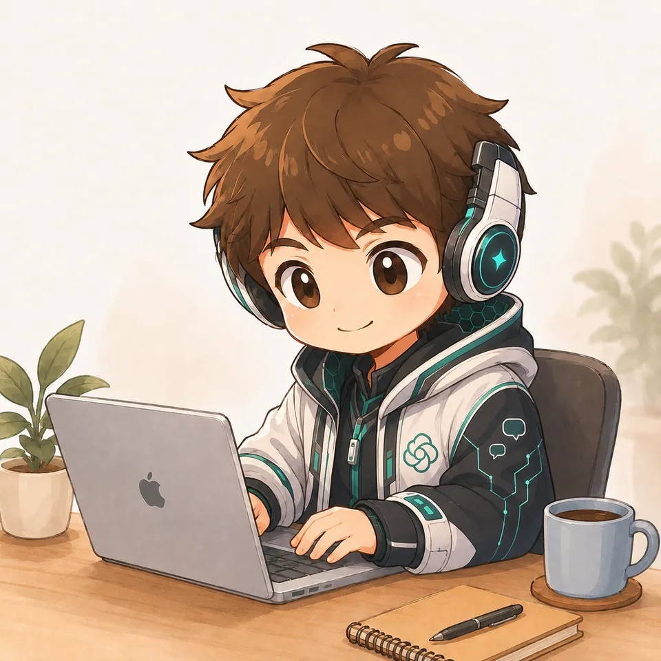
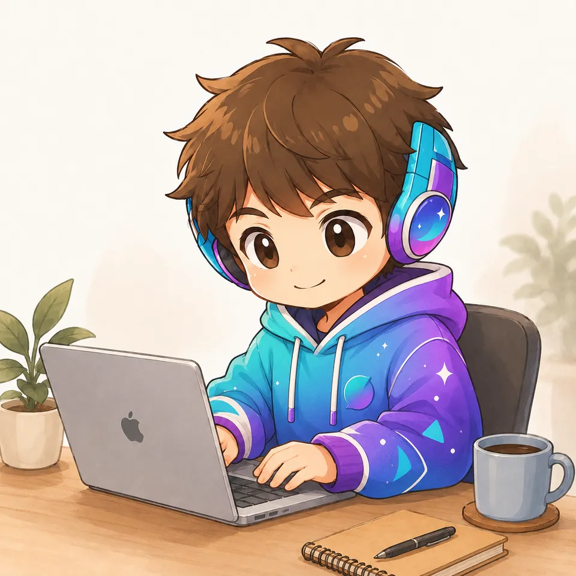
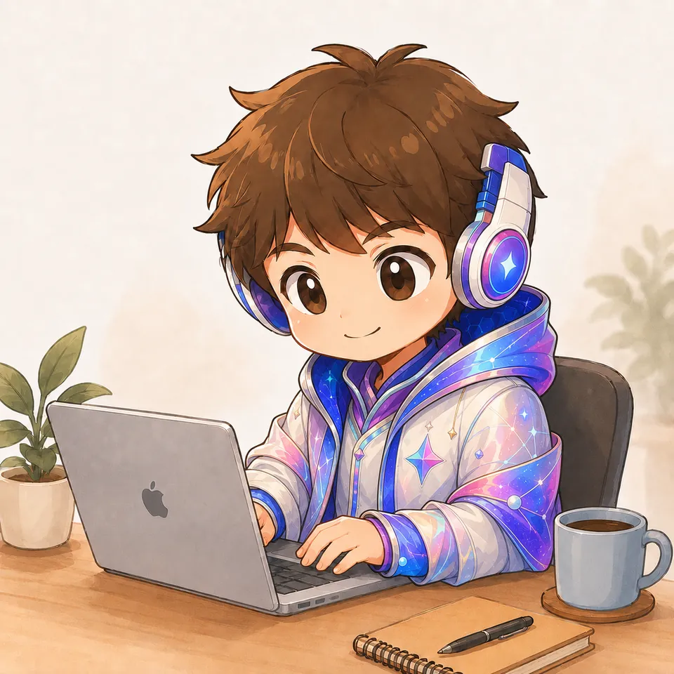
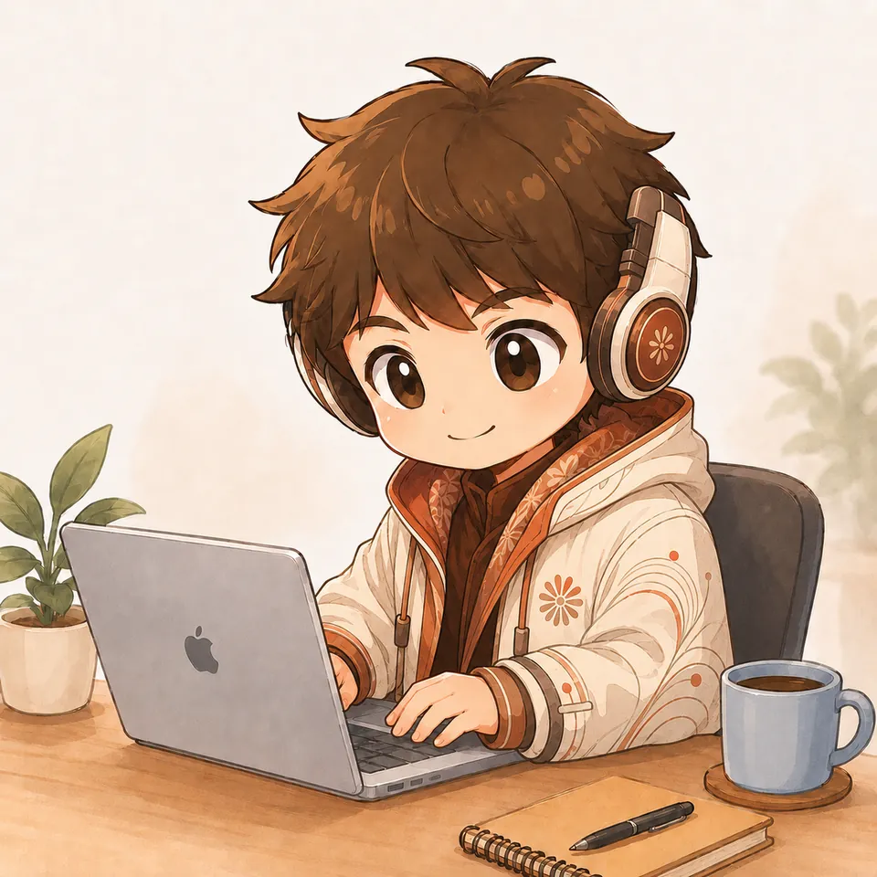

作るときは開発組織が動く。
「予約システムを作って」と頼むと、司令塔がCTO・設計・実装・テスター・セキュリティ担当に仕事を割り振ります。公式LINEの予約注文システムは、この流れでv3.1まで育ちました。
- org-orchestrator
- org-cto
- org-tester
- line-cloudflare-booking-system
役割ごとに分けた約136のスキルを、司令塔・品質ゲート・セキュリティ審査でつないでいます。開発も動画も出版も、1人で回すためのClaudeの使い方をまとめました。




依頼の中身に合わせて、呼び出すスキルの組み合わせを切り替えています。スクロールすると、モードごとに装いが変わります。
「予約システムを作って」と頼むと、司令塔がCTO・設計・実装・テスター・セキュリティ担当に仕事を割り振ります。公式LINEの予約注文システムは、この流れでv3.1まで育ちました。
最新の脆弱性やツールの更新を公式情報から調べ、Obsidianの保管庫に追記します。確かめられなかった情報には印を付けて、推測と事実を分けています。
リールは参考動画のテンポを分析し、画面が止まる時間や刺激の間隔を数字で確かめてから仕上げます。モーショングラフィックスやコードで作る動画にも対応しています。
音声入力の荒い文章や録音を渡すと、自分の文体スキルでnote記事や投稿に整えます。Kindle出版は編集長から校正・表紙・KDP登録まで12の役割で進めます。
作った担当とは別の担当がテストし、セキュリティは4か所で確かめます。光が流れる順に、仕事が受け渡されていきます。
「作って」の一言と、ゴールの確認
CEO・CTO・PMの視点で担当を決める
守り① 着手前点検既存サービスとOSSを調べて設計書に
フロント・API・DBを役割ごとに
守り② 実装ルール実装役とは別の文脈で検証する
OWASP・認証・入力検証・機密情報
守り③ 審査全部通ったときだけ公開・納品
守り④ 最終監査カテゴリを選ぶと、代表的なスキルと頼み方の例が出ます。
数はプラグインに入っているスキルも含めた目安です。
要件定義から設計・実装・テスト・セキュリティ審査・デプロイまでを、役割を分けて回します。
org-orchestratororg-ctoorg-pmorg-backendorg-testerorg-securityorg-hook-pre-deployKindle出版の12役割をはじめ、提案書、収益の振り返り、市場調査まで扱います。
kdp-chief-editorkdp-writerkdp-cover-designerrevenue-pdcadeal-closerfreelance-proposalOWASPに沿ったチェック、テスト設計、成果物を別の目で確かめる検証を担当します。
secure-codingsecurity-packai-security-audittesting-best-practicesoutput-verifierdebugging-methodologyLINEのミニアプリや予約システム、店舗サイト、デザイン品質を詰めたLPを作ります。
site-builderline-miniapp-cloudflare-saaslocal-business-webimpeccableui-ux-pro-maxdashboard-system-builderリールや長尺の編集、モーショングラフィックス、コードで作る動画、録音からの記事化まで。
reel-master-editoryoutube-pro-editorauto-video-editormotion-graphics-studioremotion-createaudio-to-spotify-noteプログラミングやAIリテラシーの教材を、登録したテンプレートに沿って企画から作ります。
material-factorycurriculum-planningscratch-slide-genmbot-curriculumai-literacy-slide-style報告書、研修スライド、議事録、調査レポートをまとめます。
slide-factorypresentation-plannerreport-writerresearch-reportmeeting-minutes自分の文体でのnote・SNS・メルマガと、1つのネタを複数の形に広げる仕組みです。
hayato-personanote-article-writercontent-multiplierai-newsletter-writerlead-gen-launcherタスクと予定の整理、Obsidianへの知識の蓄積、スキルそのものの振り返りを担います。
jarvistask-managerschedule-supportobsidian-knowledge-captureskill-reflector大学院（MBA）の課題やケース分析を、フレームワークに沿って整理します。
mba-knowledgemba-case-analysismba-assignmentスキルの数より大事なのは組み立て方です。ここだけ持ち帰れば、明日から使えます。
開発はCEO・CTO・PM・テスター・セキュリティ担当、出版は編集長・ライター・校正・表紙担当。依頼すると司令塔が担当を割り振ります。
検証役は実装の文脈を持たずに判定します。自分の成果物を自分で採点しません。
常時の指示に加え、着手前・実装中・品質ゲート・デプロイ前で確かめます。
文体スキルと、実際の資料から学んだスライド構成のスキルで、誰が頼んでも「自分らしい」出力になります。音声入力の荒い文章でも、整えた後は自分の言葉のままです。
振り返りスキルでスキル自体を直し、外部のスキルは安全とライセンスを確かめてから入れます。
最新情報や作業ログをObsidianに追記し、次の作業の土台にします。
考える時間は減らさず、書く時間だけを減らします。録音14分が約3,500字の記事になります。
これまでの作業から、成果を数字で言えるものを選びました。
OSSを調べて設計し、別の担当が審査してから実装。店主向けの「かんたん表示」まで改良しました。
議事録から方向性・機能・セキュリティ方針までを構成図つきの設計書にまとめました。
分析スクリプトで作り直す前後を測り、刺激の間隔も2.0秒から1.54秒に縮めました。
自分の文体で記事化。聞き取れなかった箇所は推測で埋めず、確認ポイントとして返します。
GitHubと公式の更新情報を調べて追記。確かめられない情報には印を付けています。
リサーチ・企画・執筆・校正・表紙・組版・KDP登録・広告・分析を、編集長スキルが品質ゲートでつなぎます。
危険なコマンドや鍵の混入、ライセンスを確かめてからスキルとして登録しました。
8項目の平均は4.4です。スキル構成とこれまでの作業履歴をもとにした見立てで、他の利用者と比べた統計ではありません。
「作って」で起動する入口が6本ほどあります。司令塔を1つに決めると、毎回同じ流れに乗ります。
説明が近いスキルをまとめると、どれが動くかのブレが減ります。
「何分が何分になったか」を残すと、一番強い紹介材料になります。
スキルの正体を知って、自分で1つ作って、チームとして回す。この順に読むと、明日から自分のAI会社を動かせます。
過去の投稿や記事を渡して、口調と言い回しを SKILL.md にまとめてもらいます。以後の文章がすべて自分の声になります。
設定の「個人の好み」に、開発時はOWASP・認証・入力検証・機密情報管理を毎回適用すると書いておきます。
担当の割り振りと、別の担当による検証を書いたスキルを1つ作ります。役割はあとから増やせます。
AIに頼む人から、
AIのチームを率いる人へ。